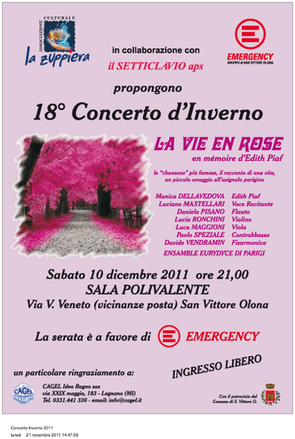
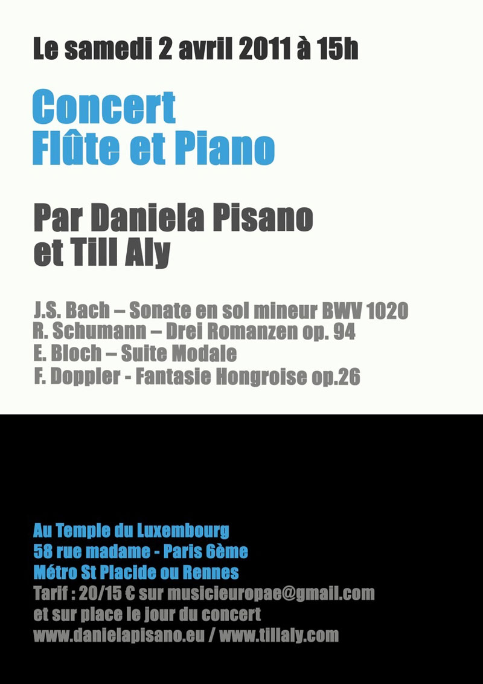
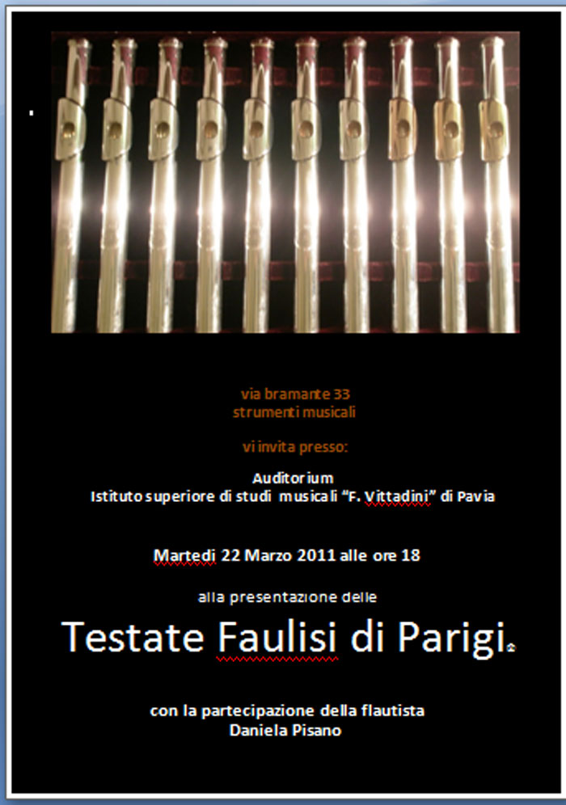
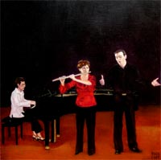
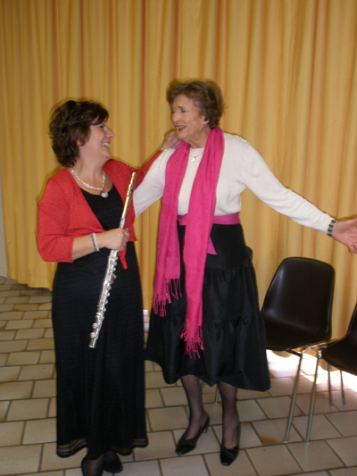
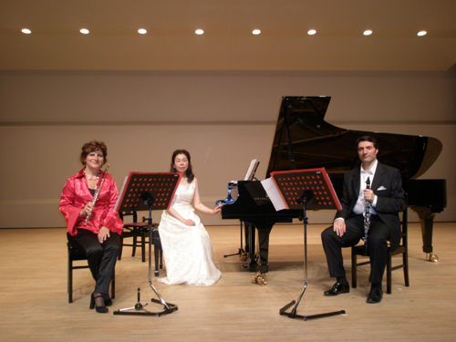
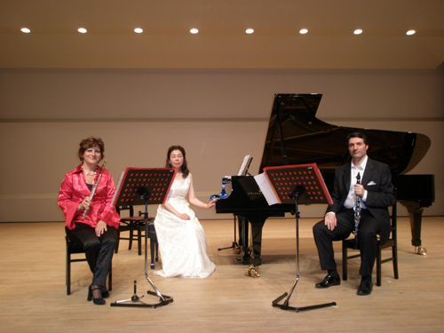

I Prossimi Impegni
======================================

===========================================
Sabato 16 Giugno ore 19,30 con contributo di euro 10,00
è gradita prenotazione - posti limitati
Concerto per Flauto e chitarra con il
duo Daniela Pisano e Santy Masciarò
presso Musica a Manetta
via dei Carracci,10
tel. 02 97374573
info@musicamanetta.it
segreteria@musicamanetta.it
===========================================
"Ensemble Eurydice"
Daniela Pisano Flauto - Flute
Mauro Righini viola - alto
Enrico Barbagli clavicembalo - clavecin
Musiche di - musique de - music of:
Bach, Galuppi, Leclair, Scarlatti, Telemann.
Domenica - Dimanche - Sunday
20 Maggio - Mai - May 2012
alle ore 16 - à 16 h - at 4 p.m.
"Ente Concerti" Castello di Belveglio
Belveglio (Asti)
entrata libera
=================================================================================
Cari amici,
Arcaduemila Labarca
e lo spazio sono lieti di presentare
lo spettacolo
"SONETTI questa donazione"
di William Shakespeare
Traduzione di Robert
Coats ispirati
William Shakespeare
Una serata di parole come
un dono. Quali sono le parole?
Dieci Sonetti di
Shakespeare, il primo in inglese e
tradotto da Robert
Coats, e dodici
sonetti (elisabettiano
in qualche metrica) che
il traduttore, poeta, a sua volta, ha
scritto circa l'amore. Come
un regalo? Le parole scritte
sono parlate. Le parole
dell'autore sono tradotte
dall'autore Vecchio
contemporaneo, e letto
da lui in collaborazione con
gli altri lettori. Scrittore
contemporaneo di parole, la tassa
vecchia di qualche ispirazione,
letti dagli stessi tre
elementi. Un insieme di
script, delle lingue e voci, è
stata una grande presenza, elegante e
straordinario, una regina nera.
Anna Bonnel,
Candice Earle Robert
Hutton e
Piumini
Flauto Daniela
Pisano
Piano Enrico
Barbagli
Domenica 22 aprile
alle ore 21, lo spazio in Via
Marco d'Oggiono Labarca
1, Milano
VI ASPETTIAMO!
Prenotazione obbligatoria e
informazioni: 339.3911862
Mostra solo per adulti
===============================================================================================================

================

=========================


===========================================================================

============================================================================

Concerto
Sabato 10 aprile 2010 ore 20,30
Domenica 11 aprile ore 15
Orchestra e coro Europa Voce diretta da Till Aly Chiesa Notre Dame de la Croix de Menilmontant 3, Place de Menilsmontant - Paris 75020
=========================================

========================
MASTERCLASS DI FLAUTO
Masterclass de flute
Flute's Masterclass
Daniela Pisano flute
Daniela Colceriu piano
5 - 8 /Marzo/ 2010
5-8 /Mars/2010
March /5-8 / 2010
LICEUL de ARTĂ “SABIN DRĂGOI” ARAD
B-dul
Revoluţiei Nr.20 cod.310139
Telefon/fax:
0257/281645
Contabilitate:
0257/270771
E-mail:
Cliccare sul link sottostante per vedere l'intervista:
href="http://www.infotv.ro/news/10-03-2010/flaut-sabin-dragoi"
==========================================
Parrocchia di San
Lorenzo Maggiore
Giorno della
Memoria
C.so di Porta Ticinese - Milano a cura
di Egidio Bertazzoni e Antonella Garello
Ebrei, “zingari”, testimoni di Geova, omosessuali, oppositori e
dissidenti politici, disabili e malati, prigionieri di guerra e
civili slavi... Sono state milioni le vittime della politica di
segregazione e sterminio durante il “dodicennio nero” della
Germania nazista. In occasione del “Giorno della Memoria”, la
Basilica di San Lorenzo Maggiore ospita una serata di letture e
musiche in ricordo della maggiore tragedia dell’Europa
moderna. Il ricordo delle
persecuzioni e delle vittime si trasforma tuttavia,
inevitabilmente, in un monito attualissimo, affinché democrazia,
libertà personali, accoglienza, tolleranza continuino a essere
valori condivisi: valori che oggi più che mai ognuno di noi è
chiamato a custodire e difendere in prima persona. Nella maggior
parte dei casi, infatti, le efferatezze del regime nazista sono
state rese possibili da individui del tutto normali, che non
hanno saputo riconoscere per tempo la natura di quel regime e vi
hanno aderito magari per un semplice caso, per inerzia, per
quieto vivere, per calcolo politico o per tornaconto personale. ENSEMBLE EURYDICE: DANIELA PISANO, flauto; LUCA CUOMO,
flauto; ALBERTO INTRIERI violino; MAURO RIGHINI, viola;
GIANANTONIO ROSSI, violoncello. Musiche di Bach, Mozart, Telemann e
Vivaldi
ARCADUEMILA
è un’associazione culturale fondata da persone, operatori
culturali e professionisti che lavorano per favorire la
contaminazione e lo scambio attraverso le più diverse forme
espressive: il teatro, la danza, la musica, la pittura, la
fotografia, il cinema, la letteratura.
ARCADUEMILA
organizza corsi di teatro, danza e musica per bambini, ragazzi e
adulti; promuove sul territorio milanese spettacoli, laboratori,
serate e incontri su temi culturali e di attualità.
Per informazioni
:
arcaduemila@gmail.com
================================================================ Sabato 12 dicembre 2009
Sala Polivalente - ore 21 San Vittore Olona (MI) "Le nuvole e
l'usignolo" Racconti in musica "Ensemble Eurydice" Daniela Pisano, flauto Luca Maggioni, viola Luigi Palombi,
pianoforte Anna Bonel, voce
recitante Musiche di : L.
Maggioni, M. Priori, P. Ugoletti Presentato da "il
SETTICLAVIO associazione artistica non profit"
======================================== "Concerto in giardino"
il 30 agosto alle ore 15. musiche di: Bach, Giordano, Chopin, Faure,
Ibert.
Im
Garten von
Grazyna und Andreas
Brabandstrasse 48
22297 Hamburg
Tel 040-5111946
Sontag 30. August 2009
um
15 Uhr
„Garten Concerto“
klassisch Musikkonzert
« ENSEMBLE EURYDICE »
Daniela PISANO, Flöte
Uly E.NEUNENS Tenor
Jonathan GRIFFITHS, Klavier
Werke von
Bach,
Chopin, Giordano, Faure, Ibert
"Tottori
Bunka Hall"
il 6 giugno 2009
alle 18,30
Daniela
Pisano flauto
Romualdo Barone
clarinetto
Kikuko Kurose
pianoforte
http://www.torikenmin.jp/a-tottoribunka/hall.htm
=============================================================== 18
aprile alle 21.00 a Cortiglione (Asti) Sala Comunale
flauto Daniela Pisano sassofono Walter Geromet pianoforte Luigi Palombi
________________________________________________________ concert 21 mars
17h Maison dans la
Vallèe Avon (77)
France

flute Daniela
Pisano baryton Olivier
Ayault harpe Huguette
Geliot piano Helene
Boscheron concert 4 avril
à 20,30 concert 5 avril
à 15h Eglise St. Roch
296, rue St-Honoré 75001 Paris -
France
Orchestre "Europa Voce"
diretta da Till
Aly flauto solista
Daniela Pisano
--------------
Concerto da
camera
flauto Daniela
Pisano
clarinetto
Romualdo Barone
pianoforte
Yoichi Tajiri
23 agosto 2008
ore 14,30
Conservatory
Chez Mozart
Kyoto -
Ashiya-Shi
Japan
Tel:
075-621-6339
programma:
Bottesini,
Donizetti, Braga, Schostakovich,
Tajiri, Rossini, Weber
----------------------------------------------------------------------------------------------
Concert
21 juillet 2008
fête de la musique au Lycée français de
Hambourg
à 12h,20
Aula du Lycée français
Hartsprung 22529 Hamburg
"Ensemble Eurydice"
Daniela PISANO, Flöte
Olivier AYAULT, Bariton
Jonathan GRIFFITHS, Klavier
Santy MASCIARO’, Gitarre
Ouvres de:
Bach, Gluck, Rossini,
Donizetti, Verdi, Piazzolla, Mancini...
---------------------------------------------------------------------------------------------------
Samstag 21. Juni 2008
um 19 Uhr
Im Garten von
Grazyna und Andreas
Brabandstrasse 48
22297 Hamburg
Tel 040-5111946
„Garten Concerto“
Daniela PISANO, Flöte
Olivier AYAULT, Bariton
Jonathan GRIFFITHS, Klavier
Santy MASCIARO’, Gitarre
Werke von Bach,
Gluck, Rossini, Donizetti, Verdi, Piazzolla, Mancini...

In
occasione del
Mercoledì 27 Gennaio 2010 h. 20.30
Basilica di San Lorenzo Maggiore
La banalità del male, il male assoluto:
Serata di letture e musiche per ricordare lo Sterminio in Europa
I brani sono letti e interpretati da ANNA BONEL, ADA
LUCIA CHERUBINI e ALBERTO REDAELLI.

 
